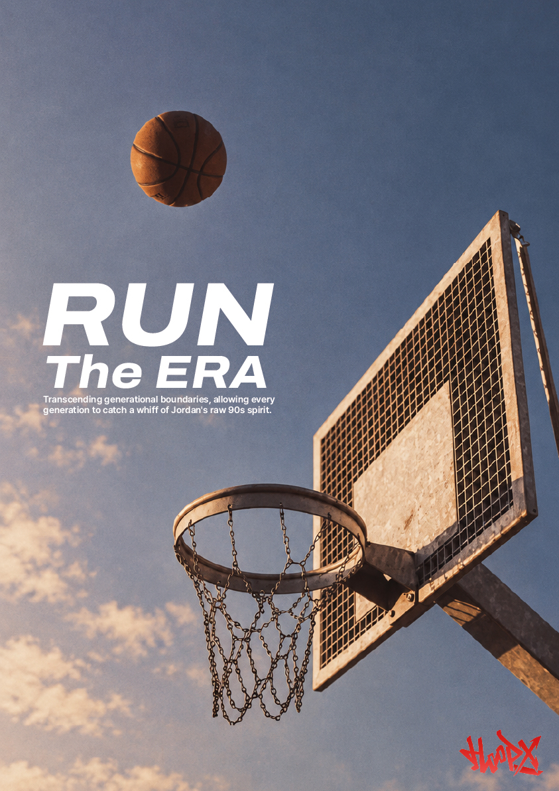
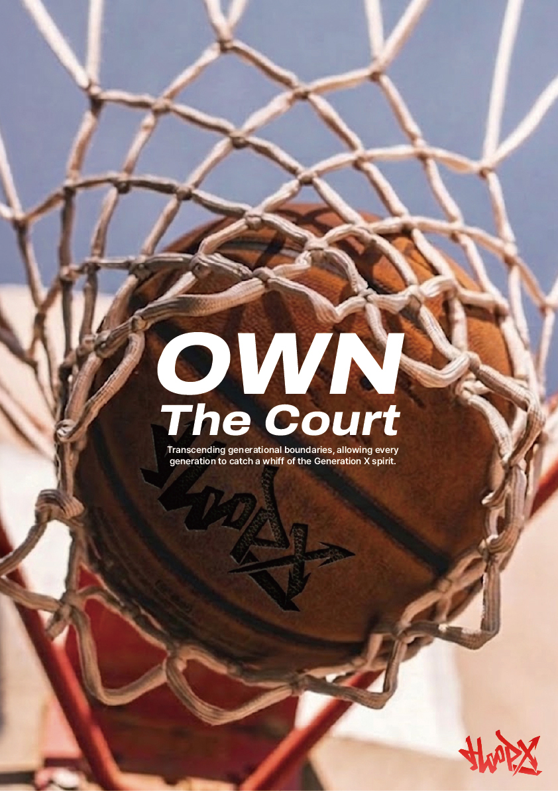

overview
X세대의 농구 문화와 스트리트 감성을 현대적으로 재해석한 HOOPX의 광고 포스터이다. 낡은 농구 골대와 하늘 위로 떠오른 농구공을 통 해 1990년대 길거리 농구의 자유로움과 역동성을 표현했다. 빈티지한 색감과 거친 골대의 질감으로 당시 농구 문화의 아날로그 감성을 강조 하고, 강렬한 타이포그래피로 현대적인 무드를 더했다. 특히 ‘RUN The ERA’라는 슬로건에는 현대에 유행했던 '슬램덩크'와 같이 시대를 이끌 었던 농구의 열정과 정신을 이어간다는 의미를 담았다. 이를 통해 세대를 넘어 과거와 현재의 농구 문화가 연결된다는 메시지를 전달한다.

overview
X세대의 농구 문화와 스트리트 감성을 현대적으로 재해석한 HOOPX의 광고 포스터이다. 농구 골대의 그물에 걸린 빈티지 농구공을 통해 코 트 위에 쌓인 열정과 추억을 시각적으로 표현했다. 낡은 가죽과 거친 그물의 질감으로 1990년대 농구 특유의 아날로그 감성을 강조하고, 강 렬한 타이포그래피로 현대적인 무드를 더했다. 특히 ‘OWN The Court’라는 슬로건에는 코트를 자신만의 무대로 만들고, 세대의 경계를 넘어 각자의 방식으로 농구 문화를 즐긴다는 의미를 담았다. 이를 통해 과거와 현재의 농구 감성이 하나의 문화로 연결된다는 메시지를 전달한다..